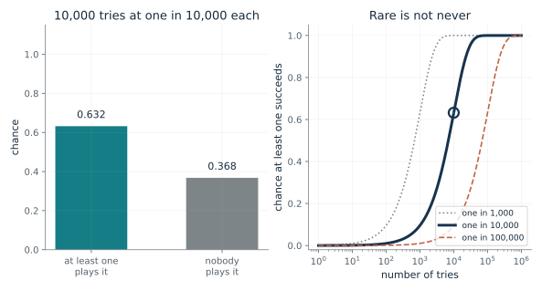
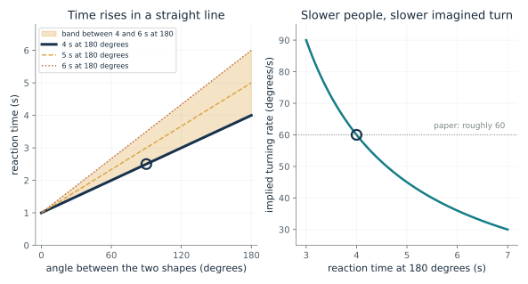
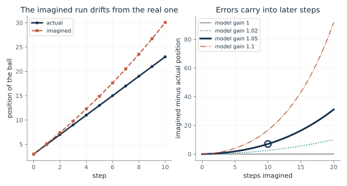
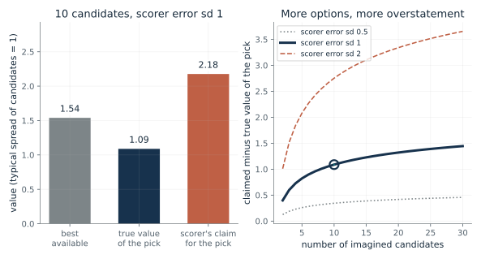
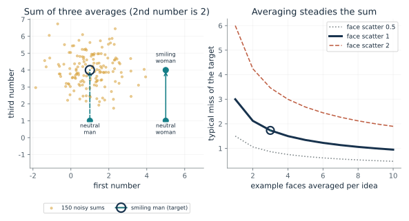
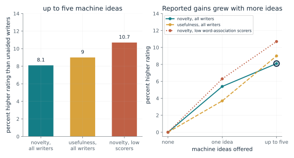
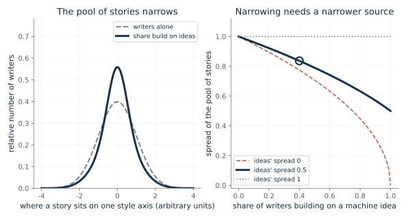

Is a one-in-ten-thousand move a move no human would play?
From Chapter 12, A paper from before the match says how the program was built
If a move has a one in 10,000 chance each time a human faces the position, what is the chance that someone plays it across many tries?
The chance that nobody succeeds in n tries is (1 - p) to the power n. For small p, that is close to the exponential of minus n times p, so when n times p reaches 1 the chance of at least one is already about 63 percent. The three tests of the chapter are separate: this one speaks only to novelty, and only as the program estimated it.
Predict first: At one in 10,000 per try, predict how many tries it takes before the chance that nobody plays the move drops below one half.

Number of independent tries: 10000 · Chance per try is one in: 10000
What happens: After 10,000 tries at one in 10,000, the chance that at least one succeeds is about 0.632. Half the chance is reached near 6,931 tries. A rare chance is not never; the chapter makes the same point: a one-in-ten-thousand chance is not never.
With a one-in-10,000 chance per try, 10,000 independent tries give a 0.632 chance that at least one succeeds. A small chance per try does not mean it never happens; it means it takes many tries.
- Chance at least one plays it
- 0.632
- Chance nobody does
- 0.368
- Expected number of players
- 1
- Tries for a 50 percent chance
- 6,932
A claim of novelty from a probability is a claim about one estimate of one position, not a statement that the move never occurred. Separating the two keeps novelty from sliding into originality.
AlphaGo's figure is the program's own estimate of how humans play, a model of human moves. The sources report it as an estimate, not as a count of games.
Show the calculation
P(at least one) = 1 - (1 - p)^n = 1 - (1 - 1/10,000)^10,000 = 0.632. Tries for a 50 percent chance: ln(0.5)/ln(1 - p) = 6,932.
The equations and symbols
- p
- the chance on one try (1/10,000 in the chapter's quote)
- n
- the number of independent tries
- P(at least one)
- the chance at least one try succeeds
The tries are independent and each has the same chance. The estimate belongs to one position as AlphaGo judged it. The number of times humans face that position is not given anywhere in the chapter.
Check your understanding: At a chance of one in 1,000 per try, how many tries give a better-than-even chance that at least one succeeds?
Book source: Chapter 12, A paper from before the match says how the program was built. Illustration C12-D01. Formula. The 1 in 10,000 figure is the chapter's quote: AlphaGo's own estimate of the chance a human would play move 37, reported by Wired and repeated by DeepMind's page. The numbers of tries are made up. The formula is the companion's arithmetic on that quote, not a claim in the chapter.
How long does it take to turn a shape in the mind?
From Chapter 12, Eight adults, 1,600 pairs of shapes each, and a straight line
If reaction time rises in a straight line from 1 second at no turn to 4 to 6 seconds at a half turn, what turning speed does the line imply?
If a mind rotated the shape at a steady speed, a turn twice as large would take twice as long, plus a fixed time for everything else. That is the straight line. Its slope is time per degree, and the inverse of the slope is degrees per second. The rate holds only if the process really is a turning.
Predict first: If the line runs from 1 second to 4 seconds, predict the time for a quarter turn (90 degrees), then check.

Angle between the shapes (degrees): 90 · Reaction time at a half turn (s): 4
What happens: The quarter turn takes 1 + 3 x 90/180 = 2.5 seconds. The line from 1 to 4 seconds implies 60 degrees per second, which matches the rate the chapter quotes. A person near the 6 second end turns about 36 degrees per second on the same reading.
Joining 1 s at no turn to 4 s at a half turn, a 90 degree turn takes 2.5 s. The line's slope implies 60 degrees of imagined turning per second, and the paper's rate is roughly 60.
- Predicted reaction time (s)
- 2.5
- Time added by the turn (s)
- 1.5
- Turning rate implied (degrees/s)
- 60
- Reaction time with no turn (s)
- 1
The simplest picture of imagining is a model of how things move, run on a case that is not happening. The straight line is behavior that fits that picture; it does not show how a brain does the turning.
The eight adults showed a straight-line rise in reaction time and said they imagined turning the shape. The paper has no brain data, and the rate is a summary of behavior.
A world model runs a learned rule forward step by step. The straight line is the cost of a mind doing something like that, in time, which the next demonstration treats as a computation.
Show the calculation
Time = 1 + (4 - 1) x 90/180 = 2.5 s. Rate = 180/(4 - 1) = 60 degrees per second.
The equations and symbols
- theta
- the angle between the two drawings, in degrees
- T_0
- reaction time with no turn, about 1 second
- T_180
- reaction time at a half turn, 4 to 6 seconds depending on the person
- rate
- degrees of imagined turning per second implied by the slope
Time is a straight line in angle between the quoted end points. The paper has no brain data. All subjects said they imagined one shape turning, and the authors treat such reports with caution. Joining 1 and 4 seconds gives the paper's 60; joining 1 and 6 seconds gives 36.
Check your understanding: A person takes 1 second at no turn and 5 seconds at a half turn. How long should a 135 degree turn take, and what turning rate is that?
Book source: Chapter 12, Eight adults, 1,600 pairs of shapes each, and a straight line. Illustration C12-D02. Reported result. Reported result (Shepard and Metzler, 1971, as the chapter presents it): eight adults, 1,600 pairs each, correct same-shape answers about 1 second at no turn and 4 to 6 seconds at a half turn. The straight lines here join the chapter's end points, as the chapter's figure does; the chapter's rate of roughly 60 degrees per second is the paper's.
How far can an imagined run be trusted?
From Chapter 12, Eight adults, 1,600 pairs of shapes each, and a straight line
A model rolls an imagined ball forward step by step. If its rule is slightly wrong, how large is the error after many steps?
At each step the model starts from its own last answer, not from the true state. So the imagined position and the real position part company at step one and the gap itself gets multiplied. The numbers show the idea in the simplest rule I could build; real models are noisier and predict ranges.
Predict first: If the model's gain is 1.05 and it runs 10 steps, predict whether the imagined ball is off by a little, or by a lot compared with how far it has moved.

Model's gain (1 is the correct rule): 1.05 · Steps imagined: 10
What happens: With a correct rule, one step takes the ball from 3 to 5, the chapter's example. Now raise the gain and the steps: the error is small after one step and keeps growing, because each imagined step starts from an already wrong place.
Starting at 3 and choosing to move right by 2 each step, the real ball is at 23 after 10 steps. A model whose rule is off by gain 1.05 imagines it at 30, an error of 7.04.
- Imagined position
- 30
- Actual position
- 23
- Error
- 7.04
- Error against distance moved
- 35.2 percent
A machine that trains on imagined games inherits the model's flaws. In the world-model experiment the agent scored 2,086 out of 2,100 in its dream and 193 in the real game, against 210 for random play. The real game exposed what the dream hid.
If imagining is running a model forward, errors would carry through the run too. The chapter's studies do not show how a brain would do that, or how a brain's own model errors grow.
This rule is a specification: the program applies a function again and again. In a learned world model that function is learned from experience, and its errors are what the rollout inherits.
Show the calculation
Real step: s_next = s + 2, so s after 10 steps = 3 + 2 x 10 = 23. Imagined step: s_next = 1.05 x s + 2, applied 10 times, gives 30.
The equations and symbols
- s_t
- the state: the ball's position at step t
- a_t
- the action: a choice at step t (here, move right by 2)
- f
- the model's rule; the real rule is s + a, the imagined one is gain x s + a
One number for the state, the same action each step, and a model whose only flaw is a gain above 1. A real learned model has many flaws and predicts a range of outcomes.
Check your understanding: With gain 1.1 and 2 steps from 3, what is the imagined position, and what is the real one?
Book source: Chapter 12, Eight adults, 1,600 pairs of shapes each, and a straight line. Illustration C12-D03. Constructed example. Constructed example. The ball at position 3 and the choice 'move right by 2' (giving 5) are the chapter's illustration. The wrong rule, with a gain above 1, is the companion's own invention to show an error carrying into later steps; it is not Ha and Schmidhuber's model, which predicts a range of outcomes and carries a memory.
Why does the option a scorer picks look better than it is?
From Chapter 12, Eight adults, 1,600 pairs of shapes each, and a straight line
A scorer ranks imagined options, and the highest score is chosen. How much does the chosen option's score overstate its worth?
A high score comes partly from real worth and partly from luck in the scoring. Picking the highest score picks the luckiest as well as the best, so on average the pick's true value is less than its score. Both the number of candidates and the scorer's roughness make the pick more selected for luck.
Predict first: With 10 candidates and a scorer whose error is as large as the spread of the candidates (sd 1), predict whether the scorer's claim for its pick is higher than the pick's true value, and by how much.

Number of imagined candidates: 10 · Scorer error sd: 1.0
What happens: With 10 candidates and scorer error sd 1, the pick's true value averages about 1.09 and the scorer claims about 2.18. The scorer is unbiased overall, but the pick was chosen partly for its good luck in scoring, so its score overstates its worth.
With 10 candidates and scorer error sd 1, the pick's true value averages 1.09 against 1.54 for the best on offer. The scorer claims 2.18, because the pick was chosen partly for its scoring error.
- Best available (mean)
- 1.54
- True value of the pick
- 1.09
- Scorer's claim for the pick
- 2.18
- Overstatement
- 1.09
Imagining generates options; something must rank them. The chapter's world-model agent excelled against its own inaccurate dream and failed in the real game. A check in the setting where the idea will be used is what separates the claimed worth from the real one.
The chapter says nothing in these studies shows what stands in for a scoreboard when a person imagines alone.
A machine that generates many candidates and picks the top-scored one inherits this overstatement, which the real game, a reader's rating or a person's judgment can expose.
Show the calculation
Mean best of 10 standard normal values = 1.54. True value of the pick = 1.54/sqrt(1 + 1^2) = 1.09. Claim = 1.54 x sqrt(1 + 1^2) = 2.18.
The equations and symbols
- n
- number of candidates
- m_n
- the average best true value among n candidates (candidate values have spread 1)
- sigma
- spread of the scorer's error, in the same units
Candidate values and scorer errors are bell-shaped, the scorer is unbiased, and its error is unrelated to the candidate. A flawed scorer in a real game has systematic flaws that an agent can find, which this model does not capture; it shows only the smallest version of the effect.
Check your understanding: Three moves are scored 2, 5 and 4, and the second is chosen. If the scorer's error could be as large as 1 point, can the choice be wrong?
Book source: Chapter 12, Eight adults, 1,600 pairs of shapes each, and a straight line. Illustration C12-D04. Model. Constructed model. The chapter's own example is three moves with scores 2, 5 and 4, where the second is chosen. The closed forms here follow from standard normal values and normal scoring error; they are the companion's addition. The chapter's dream-versus-real figures (2,086 of 2,100 imagined, 193 real, 210 random) are quoted from it and are not produced here.
How do sums on points make a smiling man?
From Chapter 12, A network learned to turn points into faces
If smiling woman minus neutral woman plus neutral man gives a smiling man, why does the chapter say that averaging three faces per idea mattered?
Each idea is the average of a few example points, so its error is smaller than one example's by the square root of the number averaged. The sum has three such averages and three numbers, so its typical miss is 3 times the scatter divided by the square root of the number of examples.
Predict first: With face scatter 1, predict whether averaging 3 faces per idea gives a typical miss of the target below 1, then check.

Example faces averaged per idea: 3 · Scatter of example faces: 1.0
What happens: Without scatter the sum lands exactly on (1, 2, 4). With scatter 1 and 3 examples per idea the typical miss is 3 x 1/sqrt(3), about 1.73, still more than half the smile step of 3. With one example it is 3, as large as the step itself.
Without scatter, smiling woman minus neutral woman plus neutral man lands exactly on (1, 2, 4), the smiling man. With face scatter 1 and 3 examples per idea, the result misses by about 1.73 on average, in made-up numbers.
- Noise-free result
- (1, 2, 4)
- Typical miss, exact
- 1.73
- Typical miss in the 150 draws
- 1.79
- Miss against the smile step of 3
- 0.577
A step along the space that changes one feature is only as reliable as the points it starts from. The chapter's authors also never tested whether a new face sits far from its closest training face, so the sums do not show the faces are original.
The sources here show no brain counterpart to such a space.
A generator turns each point into an image, so a point is enough to get a face. The toy sum is a specification of vector arithmetic; whether a real space follows it is shown only for selected paths, not everywhere.
Show the calculation
(5, 2, 4) - (5, 2, 1) + (1, 2, 1) = (1, 2, 4). Each idea's average has scatter 1/sqrt(3); three averages and three numbers give a typical miss of sqrt(9) x 1/sqrt(3) = 1.73.
The equations and symbols
- z
- a point in the latent space (the toy has three numbers; the real one has 100)
- g
- the generator: it turns a point into an image
- z-bar
- the average of the points for several example faces of one idea
Each example face is its idea's point plus independent bell-shaped scatter of the same size in every number. The chapter reports no such scatter. Real spaces are less tidy, and the sums were a demonstration in one figure, not a measured success rate.
Check your understanding: With scatter 2 and 4 examples per idea, what is the typical miss of the target?
Book source: Chapter 12, A network learned to turn points into faces. Illustration C12-D05. Constructed example. The toy points (5, 2, 4), (5, 2, 1) and (1, 2, 1) giving (1, 2, 4) are the chapter's illustration with made-up numbers. The scatter of example faces and the 150 seeded draws (seed 12) are the companion's constructed model of why averaging helps; the chapter reports only that one example per idea was 'unstable' and three averaged examples worked. They are not measurements of a network.
What did machine ideas do for the writers?
From Chapter 12, Writers with AI story ideas, and stories that look alike
How much higher did readers rate stories written with machine ideas, and for which writers was the gain largest?
Writers with no ideas set the zero. With one idea, readers rated the writers' stories higher on both indices, and with up to five, higher still. The authors found little effect for writers who scored high on the word-association test.
Predict first: Before you choose, predict whether the usefulness gain is larger with one idea or with up to five, and whether it grows faster than the novelty gain.

Machine ideas offered (0 = none, 1 = one, 5 = up to five): 5
What happens: With up to five ideas, novelty rose 8.1 percent and usefulness 9.0. Usefulness grew from 3.7 to 9.0 percent, more than the novelty gain did. The low scorers gained 10.7 percent on novelty.
Readers rated stories by writers offered up to five machine ideas higher by 8.1 percent on novelty and 9 percent on usefulness. For writers who scored low on the word-association test, the novelty gain was 10.7 percent.
- Novelty gain, all writers (percent)
- 8.1
- Usefulness gain, all writers (percent)
- 9
- Novelty gain, low scorers (percent)
- 10.7
This covers two of the three tests from move 37, with readers scoring novelty and usefulness separately. It shows that people can be helped; it does not show that a brain generates candidates the same way.
Readers' ratings played the part of the scoreboard. The study did not test how the writers themselves generate ideas.
GPT-4 supplied three-sentence ideas. The model's side is a source of candidates, rated by people afterward.
Show the calculation
These are the chapter's reported percentages, read from the chapter and not recomputed from the study's data.
The equations and symbols
- gain
- percent change in the readers' index, against writers with no machine ideas
- novelty index
- readers' rating of a story as novel, original and rare
- usefulness index
- readers' rating as appropriate, feasible and publishable
Writers were recruited online without selection for writing experience and the task was an eight-sentence story. Originality was not rated on its own; it sits inside the novelty rating. Novelty and usefulness were scored apart.
Check your understanding: In the study, did novelty or usefulness gain more going from one idea to up to five, and by how many percentage points?
Book source: Chapter 12, Writers with AI story ideas, and stories that look alike. Illustration C12-D06. Reported result. Reported result, quoted from the chapter (Doshi and Hauser, 2024): 293 writers, 600 readers. One idea: novelty up 5.4 percent, usefulness up 3.7. Up to five: 8.1 and 9.0. Low word-association scorers: novelty up 6.3 and 10.7 percent. The chapter gives no usefulness figures for the low scorers and no number for high scorers ('little effect'), so none appear here.
When does a shared source narrow what people write?
From Chapter 12, Writers with AI story ideas, and stories that look alike
If some writers build on ideas from one source, when does the whole pool of stories get narrower?
The pool is a mixture of two groups. Its variance is the share-weighted average of their variances, because both groups are centered at the same place in this model. When the machine's ideas are no narrower than the writers' own, the pool's spread stays at 1. Only a narrower source shrinks it.
Predict first: If the machine's ideas are as varied as the writers themselves (spread 1), predict how much the pool narrows when most writers use them.

Share of writers building on a machine idea: 0.4 · Spread of the machine's ideas: 0.5
What happens: With 0.4 of writers building on ideas of spread 0.5, the pool's spread falls to about 0.84. Set the ideas' spread to 1 and the pool does not narrow at all, however many use them. Set it to 0 and the share building on the one idea becomes a spike.
If 0.4 of writers build on ideas whose spread is 0.5 and the rest write alone with spread 1, the pool's spread is 0.837. Only a source narrower than the writers shrinks the pool, and the model says nothing about how good any story is.
- Spread of the pool
- 0.837
- Spread of writers alone
- 1
- Pool spread as a share of writers alone
- 0.837
- Share building on ideas
- 0.4
A person can be helped while the pool of ideas narrows. Whether a machine source is narrower than its users is a measurable question, which the study's main text did not test.
The study measured stories, not the minds that produced them.
A model draws on one learned source for every user. This demonstration shows what such a source would do if its spread were smaller; it does not show that it is.
Show the calculation
Spread = sqrt((1 - 0.4) x 1^2 + 0.4 x 0.5^2) = 0.837.
The equations and symbols
- q
- the share of writers who build on a machine idea
- sigma_w
- spread of stories writers produce alone (set to 1)
- sigma_i
- spread of stories built on the machine's ideas
- sigma_pool
- spread of the whole pool of stories
Each writer either builds on a machine idea or writes alone, with story positions bell-shaped on a single arbitrary axis. A program measured similarity in the study, with embeddings, not this axis. The model says nothing about how good any story is.
Check your understanding: Half of the writers build on ideas with spread 0, all the same, and the rest write alone with spread 1. What is the pool's spread?
Book source: Chapter 12, Writers with AI story ideas, and stories that look alike. Illustration C12-D07. Model. Model, the companion's own. The chapter calls the machine side an inference: a model may repeat its favorite patterns because its output comes from one learned source, and the study did not test that in its main text. The measured rise in similarity was small: under one point on a scale whose own range was about 8 points, and about 5 percent more similar to the machine's ideas. This demonstration does not reproduce those figures.
Mathematical illustrations use the book's formulas with disclosed small examples. Each interactive choice shows a result computed from the same calculations as the chapter notebook. A simulation is not a measurement, and for a brain the mathematics is a model: a picture illustrates a result, and the assumptions determine its scope. Review copy, brain-computer partnership revision of 1 november 2026.